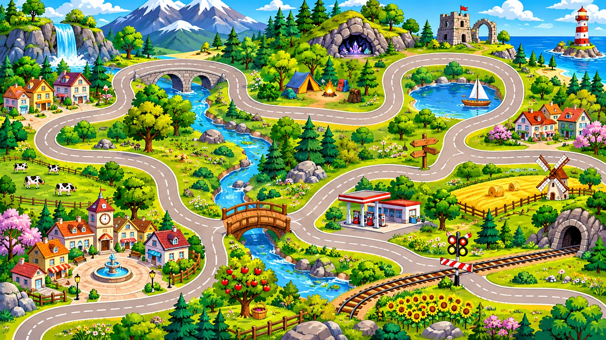
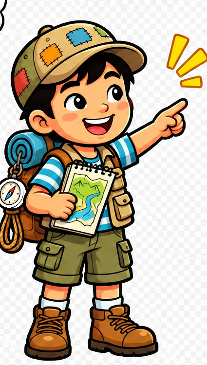

Привет, исследователь!
Тебя ждут эксперименты, загадки и открытия. Наблюдай, сравнивай, проверяй свои догадки — и шаг за шагом раскрой главную тайну!
Готов раскрыть тайну скорости?
Тогда отправляйся в экспедицию!
🧭 7 этапов🔎 16 заданий🚴 Большое открытие

Режим обучения
Решай задачи по материалам учебника и проверяй, как связаны скорость, путь и время.
Пройдено этапов: 0 из 7 · заданий: 0 из 16
ПРОВЕРЬ СЕБЯ
Какие утверждения верны?
Отдельная проверка после заданий. Прочитай утверждение и выбери ответ. После каждого ответа мальчик объяснит свойство.
Утверждение 1 из 6

Правильных ответов: 0 из 6